| x1 | y1 | x2 | y2 | x3 | y3 | x4 | y4 | |
|---|---|---|---|---|---|---|---|---|
| 1 | 10 | 8.04 | 10 | 9.14 | 10 | 7.46 | 8 | 6.58 |
| 2 | 8 | 6.95 | 8 | 8.14 | 8 | 6.77 | 8 | 5.76 |
| 3 | 13 | 7.58 | 13 | 8.74 | 13 | 12.74 | 8 | 7.71 |
| 4 | 9 | 8.81 | 9 | 8.77 | 9 | 7.11 | 8 | 8.84 |
| 5 | 11 | 8.33 | 11 | 9.26 | 11 | 7.81 | 8 | 8.47 |
| 6 | 14 | 9.96 | 14 | 8.10 | 14 | 8.84 | 8 | 7.04 |
| 7 | 6 | 7.24 | 6 | 6.13 | 6 | 6.08 | 8 | 5.25 |
| 8 | 4 | 4.26 | 4 | 3.10 | 4 | 5.39 | 19 | 12.50 |
| 9 | 12 | 10.84 | 12 | 9.13 | 12 | 8.15 | 8 | 5.56 |
| 10 | 7 | 4.82 | 7 | 7.26 | 7 | 6.42 | 8 | 7.91 |
| 11 | 5 | 5.68 | 5 | 4.74 | 5 | 5.73 | 8 | 6.89 |
Few Types of Graphs
Vivek Patil, Ph.D.
Associate Professor of Marketing
Anscombe's Quartet
Beauty of Quartet
| datasource | x-mean | y-mean | x-variance | y-variance | correlation-xy |
|---|---|---|---|---|---|
| 1 | 9 | 7.500909 | 11 | 4.127269 | 0.8164205 |
| 2 | 9 | 7.500909 | 11 | 4.127629 | 0.8162365 |
| 3 | 9 | 7.500000 | 11 | 4.122620 | 0.8162867 |
| 4 | 9 | 7.500909 | 11 | 4.123249 | 0.8165214 |
Plots of the datasets
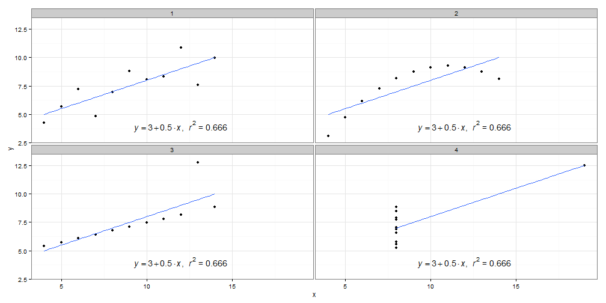
Encoding Categorical Variables
- 2D position
- Hue
- Point Shape
- Fill pattern
- Line Style
Relationships usually displayed in graphs
- Time Series: Changes in variable(s) over time (Change, rise, increase, fluctuate, grow, decline, decrease, trend)
- Ranking (larger/smaller/equal to/greater/lesser)
- Part-to-whole (rate/percent/share of total/accounts for n percent)
- Deviation (absolute/percentage/rate of deviations from a reference value,)
- Distribution (frequency, distribution, range, concentration, normal)
- Correlation (how variables covary - increases/decreases/changes with, caused by, affected by)
- Geospatial (spatial, geographical - county/city/region/state/...)
- Nominal comparison (simple comparison of categorical variables - alphabetical/ascending/descending)
Nominal Comparisons
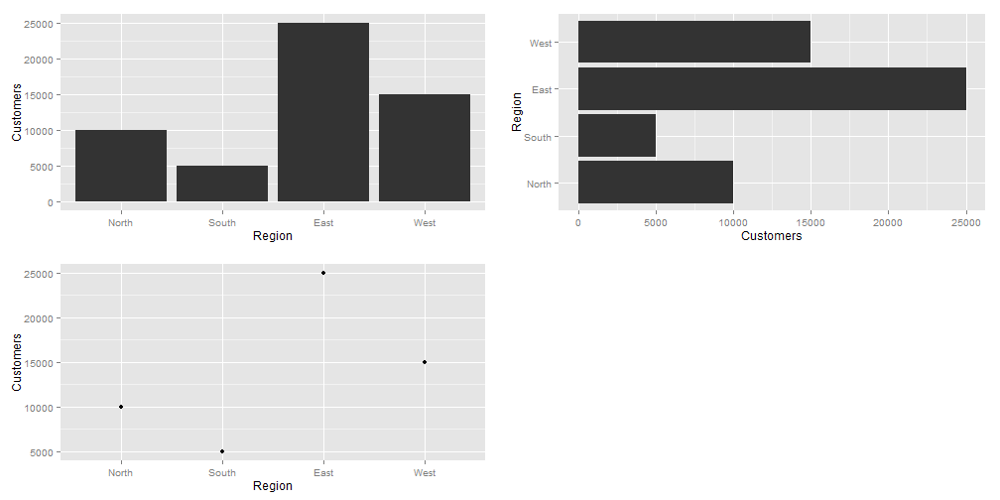
Time Series

Ranking

Part-to-Whole
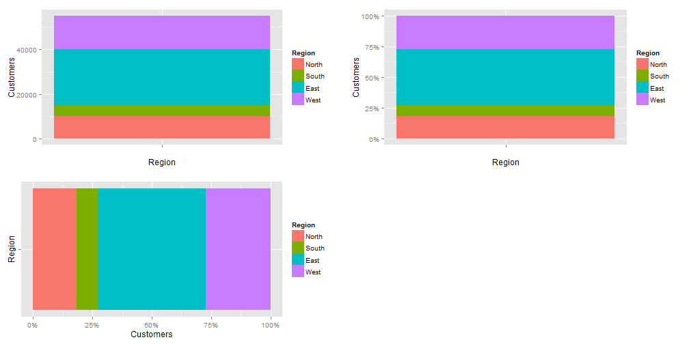
Shapes with 2-D areas (area-graphs)
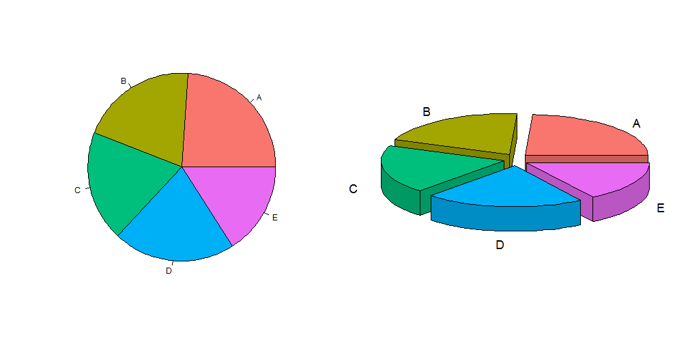
Shapes with 2-D or Bars?
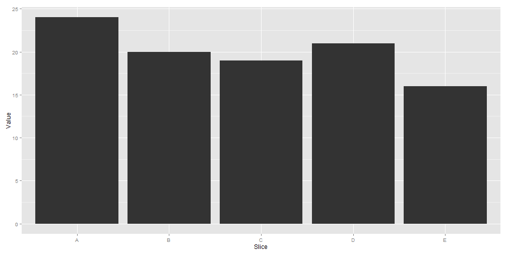
Part-to-Whole
Pie-charts, for their disadvantages, are easily recognized. Can use bars close to each other. 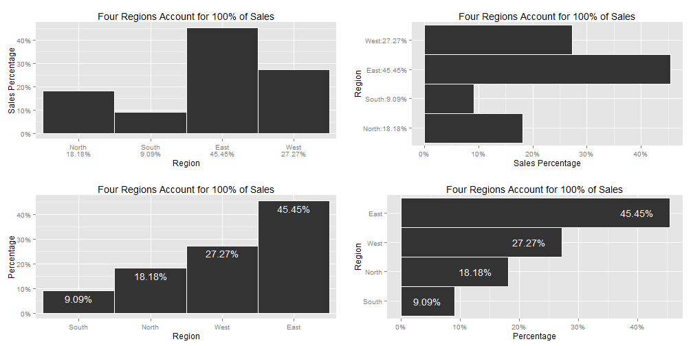
Deviation Designs
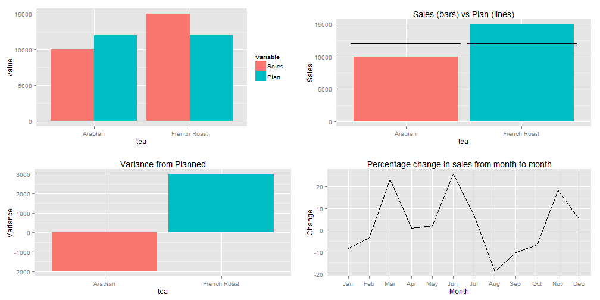
Studying Distributions
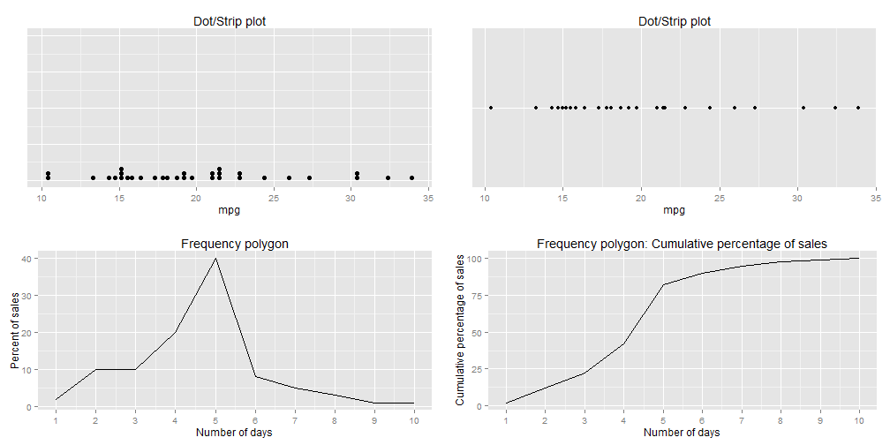
More distributions
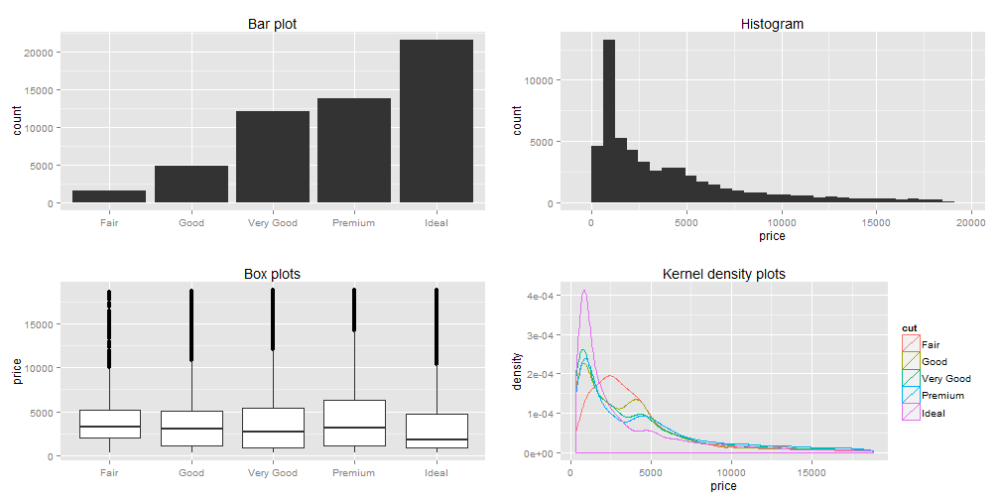
Correlations

Geo-Spatial Designs
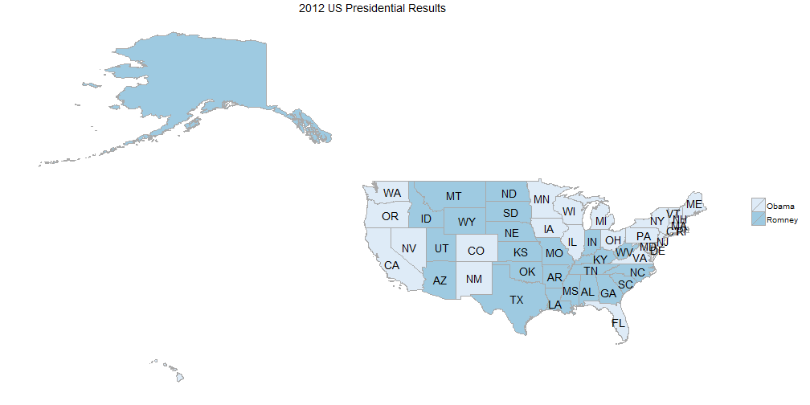
Geo-Spatial Designs
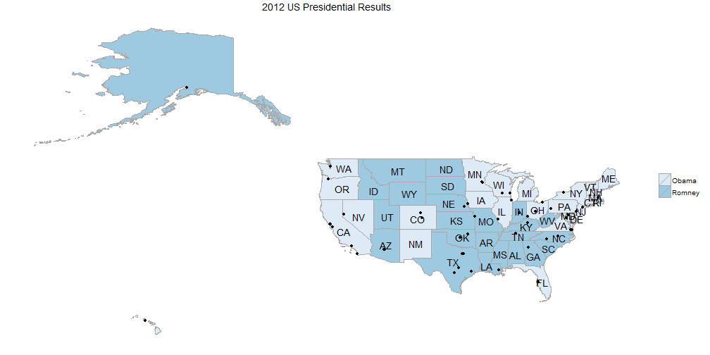
Geo-Spatial Designs
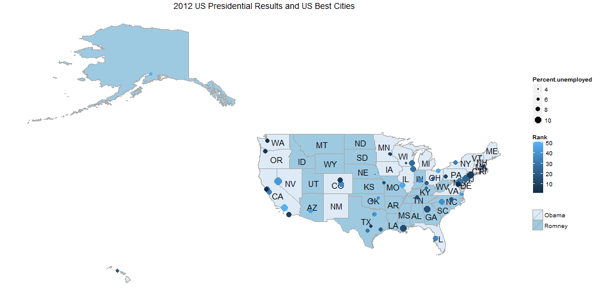
Geo-Spatial Designs

Acknowledgements
- Most of the content derived from chapter titled "Fundamental Variations of Graphs" in Stephen Few's book: "Show Me the Numbers"
- Almost all graphs created using the
ggplot2package in R - The presentation was created using the
slidifypackage in R - Code for this presentation can be found at: https://github.com/patilv/TypesofGraphsABCD
- The presentation can be found at: http://patilv.com/TypesofGraphsABCD